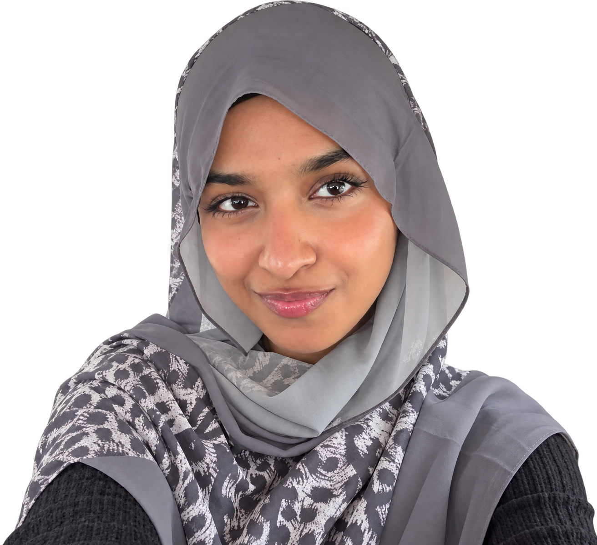
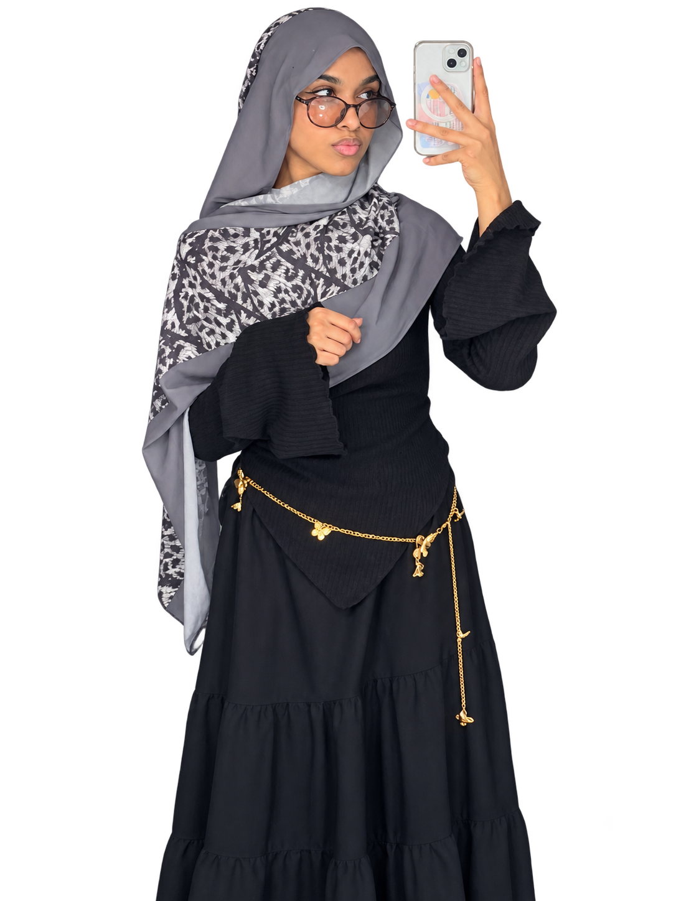

Front-end
development.
I build responsive websites with HTML, CSS and JavaScript, turning layouts into clear, interactive experiences that work across screen sizes.
HTML · CSS · JAVASCRIPTFRONT-END DEVELOPMENT
UI/UX DESIGN
GRAPHIC DESIGN

FARAHRIFADCREATIVE COMPUTING STUDENT — YEAR 03
I’m Farah, studying Creative Computing at Bath Spa University. I’m learning how design and technology work together—and putting that learning into websites, prototypes and visual experiences.
I build responsive websites with HTML, CSS and JavaScript, turning layouts into clear, interactive experiences that work across screen sizes.
HTML · CSS · JAVASCRIPTI shape user flows, wireframes and interactive Figma prototypes, focusing on intuitive navigation, thoughtful layouts and the details that make an interface easy to use.
FIGMA · WIREFRAMES · PROTOTYPESI create digital visuals with typography, colour and composition—from social media graphics to presentation layouts—with a consistent visual identity.
FIGMA · CANVA · VISUAL DESIGN02 / SELECTED WORK
Explore the projects.
Drag to find your next favourite.
03 / THE PERSON

I’m Farah Rifad, a third-year Creative Computing student at Bath Spa University, based in the UAE. I bring together front-end development, UI/UX and graphic design to create digital experiences that look considered and feel easy to use.
My projects span interactive websites, app prototypes, API-driven experiences and games. I enjoy shaping an idea through layout, interaction and code, paying attention to the details that help people navigate. I’m looking for an internship or entry-level opportunity where I can contribute my design and development skills, learn from a team and keep improving. I’m also open to related creative and digital roles.
04 / OPEN TO OPPORTUNITIES
A little hello could lead to something great.
I’m looking for internships and entry-level roles in front-end development, UI/UX design and graphic design. I’m also open to related opportunities where I can contribute, learn and grow.
BASED IN UAE
Education, skills and experience.
Save a copy of my résumé.